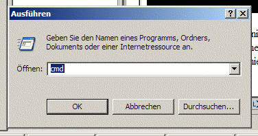
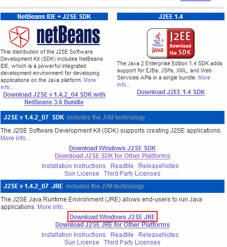
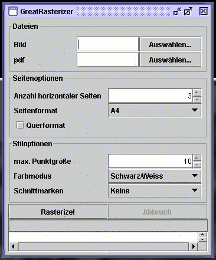
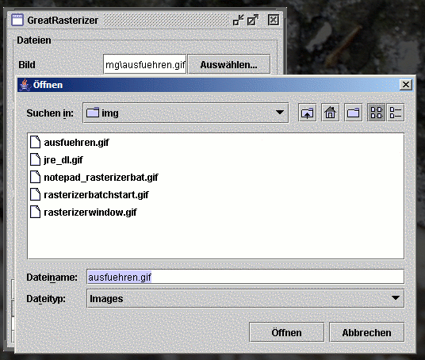
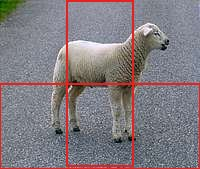
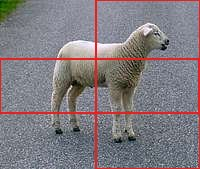
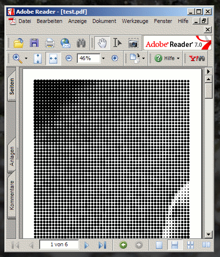

Das
Rasterizer-Tutorial für SOS-Gucker :)
Version 1.0 (04.02.2005)
- Einleitung
- Java?
- Rasterizer
herunterladen / installieren
- Rasterizer Starten
- Dateiauswahl
- Einstellungen
- Rastern
- Montieren
Nachdem jetzt doch einige Anfragen wegen dem
Rasterizer per Mail bei
mir eintrudeln, habe ich jetzt hier einmal versucht, eine
möglichst ausführliche und komplette Anleitung
für den Rasterizer zu schreiben, mit der auch nicht so
technikbewanderte Menschen ein Rasterbild zum fliegen bekommen.
Diese Einleitung bezieht sich zunächst einmal auf Windows 2000
oder Windows XP. Ältere Windowsversionen (Me / 98) habe ich
leider nicht mehr hier rumstehen (Hallo, wir haben 2005!), deswegen
fällt es mir schwer, da eine komplette Anleitung zu schreiben,
es ist auch anzunehmen, das solche Rechner vielleicht nicht ganz
ausreichend sind für den Rasterizer. Allerdings habe ich ein
paar Anmerkungen, mit denen es auch unter Windows ME oder 98 klappen
könnte, in [eckige Klammern] geschrieben.
Eine Kurzanleitung für Mac OSX werde ich nachliefern.
Linux-User halte ich für so kompetent, das sie den Rasterizer
auch ohne tiefergehende Anleitung zum fliegen bekommen. Sollte ich mich
da täuschen, schreibt mir 'ne Mail.
Falls dennoch Fragen aufkommen sollten, könnt Ihr ab sofort
das Rasterizer.de-Forum
benutzen!
[<<Zurück
zum Inhaltsverzeichnis]
Um den
Rasterizer starten zu können, brauchst Du
ein
Java-Runtime-Environment, eine Java-Laufzeitumgebung, kurz JRE. Dies
ist ein Programmpaket der Firma Sun, welche Deinen Computer so
aufrüstet, dass Du Java-Programme starten kannst. Der
Rasterizer braucht eine ziemlich neue Version des JRE, mindestens
jedoch Version 1.4.2.
Vielleicht
hat dein Computer ja
schon Java installiert. Das
herauszubekommen ist relativ einfach:
Im Startmenü gibt es einen Punkt "Ausführen...":
Diesen wählst Du aus. Es sollte sich ein Fenster
öffnen, in dem Du ein beliebiges Programm starten kannst:

Dort
gibst Du jetzt "cmd" ein und drückst die Eingabetaste.
[Hinweis für WindowsME oder 98-User: "cmd" durch "command"
ersetzen, dann sollte es gehen] Es öffnet sich ein Fenster,
das an
übelste DOS-Zeiten erinnert, eine sog. Kommandozeile. Dort
kannst Du jetzt ebenfalls beliebige Programme starten. Das ganze sollte
so ähnlich aussehen wie dies hier:
Wir wollen ja aber nur schnell herausbekommen, ob und welche
Java-Version auf Deinem Computer vorhanden ist. Also gibst du folgendes
ein:
java -version
und drückst die Eingabetaste. Im Idealfall sieht das dann so
aus:
Wenn das bei Dir so aussieht, ist das schlimmste eigentlich schon
überstanden und Du kannst bei der Installation vom
Rasterizer weiter machen.
Im schlimmsten Fall meldet das Programm folgendes:
C:\Dokumente und Einstellungen\Jan>java -version
Der Befehl "java" ist entweder falsch geschrieben oder
konnte nicht gefunden werden.
C:\Dokumente und Einstellungen\Jan>
Dann ist Java nicht, oder nicht richtig installiert.
Meldet das Programm eine andere Version, so ist Vorsicht geboten:
Version 1.5 oder 5 ist in Ordnung, Version 1.3 wird vermutlich nicht
funktionieren (Das habe ich aber ehrlich gesagt noch nie probiert). Du
wirst also auch eine neue Version installieren müssen.
Java-Download und Installation
Diese Version bekommst Du bei Sun.
Auf der Webseite sieht es etwas kompliziert aus, deswegen hier mal ein
Teil der Webseite mit 'ner Markierung, wo Du klicken musst:

Dann sollte der Download starten (wenn man Glück hat
und die Sun-Seite nicht gerade wieder einmal den Geist aufgibt).
Achtung:
Das JRE ist sehr
groß (ca. 15MB). Wenn man per Modem oder ISDN im Netz ist,
kann das schon mal ein bisschen dauern. Wenn man einen guten Freund mit
DSL hat, der einem das schnell mal auf CD Brennen kann, ist das sicher
eine gute Idee :)
Als nächstes muss man die Installation starten. Dazu gehst Du
in das Verzeichnis, wo der Browser die Datei hingelegt hat und klickst
die Datei doppelt. Ein normaler Installer öffnet sich und dort
muss man dann die Lizenzbedinungen von Java bestätigen und ein
paar Einstellungen tätigen. In der Regel sollten die
vorgegebenen Einstellungen allerdings in Ordnung sein, so daß
man sich immer mit dem Weiter-Button durchhangeln kann.
Nach der Installation muß der Rechner unter
Umständen neu gestartet werden. Es wäre sicher JETZT
eine gute Idee, diese Webseite als Lesezeichen oder Favorit
abzulegen :)
Wenn man damit fertig ist, sollte man den Test
von oben (java -version) noch einmal wiederholen. Klappt das immer noch
nicht, hast Du irgendwas falsch gemacht. Geh die Schritte einfach
nochmal durch, oder frage einen Freund oder eine Freundin, der oder die
vielleicht helfen kann. Hier versagen in der Regel meine Mittel, aus
der Ferne zu helfen...
Kurzer Exkurs: Warum ist mein
Programm in Java geschrieben und muss so kompliziert installiert werden?
Java ist eine tolle Programmiersprache, für die es tolle
kostenlose Tools gibt, um schnell und einfach so komplizierte Programme
wie den Rasterizer zu entwickeln. Noch was tolles ist, das
Javaprogramme, wenn man sie einmal entwickelt hat, auf jedem Computer
laufen, der Java installiert hat, und zwar unabhängig davon,
ob es sich um einen Mac, einen Windows-PC oder einen Linux-Rechner
handelt. Und zu guter Letzt gibt es für Java eine ganz tolle
Bibliothek um PDF-Dateien zu erzeugen, also die Acrobat-Dateien, die
beim Rasterizer (und auch bei dem original-Rasterbator) hinten
rauskommen.
[<<Zurück
zum Inhaltsverzeichnis]
Für
Anfänger bietet sich
die GUI-Version an. GUI
steht für "Graphical User Interface" (Grafische
Benutzeroberfläche) und bedeutet nix anderes, als dass die
GUI-Version nicht über die Kommandozeile (jaja, das cmd-Ding
von eben), sondern wie unter Windows gewohnt über eine
Fenster-Oberfläche gesteuert wird.
Die Windows-GUI-Version kannst Du von rasterizer.krutisch.de
herunterladen.
Bei der Datei, die Du dann heruntergeladen hast (Wenn dein Freund mit
dem DSL-Anschluss das Java runterlädt, soll er den Rasterizer
gleich mit auf die CD brennen), handelt es sich um eine ZIP-Datei. Wenn
Du WindowsXP hast, dann kannst Du die Datei mit Windows öffnen
(Doppelklick!) und die enthaltenen Dateien einfach in ein beliebiges
Verzeichnis (z.B. auf den Desktop oder nach Eigene Dateien) entpacken.
Solltest Du Windows 2000 oder noch was älteres haben, solltest
Du auch versuchen, die Datei doppelt zu klicken.
Eventuell öffnet sich ein sog. Archivierungsprogramm, wie z.B.
WinZIP,WinRAR,PowerArchiver oder FilZIP. Das ist gut. Dann kannst Du
auch einfach die Dateien in ein beliebiges Verzeichnis entpacken.
Wenn sich statt dessen ein Fenster öffnet, das ganz viele
Programme in einer Liste darstellt und Dich fragt, mit welchen Du die
Datei öffnen willst, dann musst Du leider auf "Abbrechen"
klicken und schweren Herzens muss ich Dich bitten, noch ein Programm zu
installieren, nämlich eines von den oben genannten
Archivierungsprogrammen. Mein Favorit, weil schnell und kostenlos, ist Filzip.
WinZIP
kann man zum entpacken auch ganz gut verwenden, ohne es zu bezahlen.
Bitte sei mir nicht böse, dass ich jetzt hier die Installation
nicht auch noch im Detail beschreibe, das sollten die Webseiten der
genannten Programme auch ganz gut hinbekommen.
Jetzt solltest Du also ein Verzeichnis (Einen Ordner) haben, in dem die
drei Dateien drin sind, die in dem ZIP-Archiv auch drin waren. Wichtig
ist davon die Datei "rasterizergui.exe"(Je nach Einstellung zeigt
Dir dein Windows auch nur "rasterizergui" an) und der Ordner "libs" mit der darin liegenden Datei.
[<<Zurück
zum Inhaltsverzeichnis]
Jetzt
lässt sich der Rasterizer starten, in dem Du doppelt draufklickst. Das Fenster sieht dann ca. so
aus:

Damit kann jetzt nichts mehr schief gehen und wir können uns
ENDLICH der Benutzung des Rasterizers zuwenden.
[<<Zurück
zum Inhaltsverzeichnis]
Um
den Rasterizer benutzen zu können,
müssen wir
zunächst einmal zwei Dateien auswählen. Zum einen das
Bild, das in ein Rasterbild umgewandelt werden soll, zum anderen die
PDF-Datei, die nachher erzeugt werden soll.
Was
für Bilder eignen sich für die
Rasterisierung?
Also zunächst einmal kann der Rasterizer momentan nur die
Typen gif, jpeg und png verarbeiten verarbeiten. Wenn Du ein Bild in
einem anderen Format (z.B. als Photoshop-Datei oder als Coreldraw-Datei
oder sonst irgendwas seltsames) vorliegen hast, müsst Ihr das
erst einmal umwandeln. Tutorials, wie man Bilder umwandelt gibt es im
Netz wie Sand am Meer, das würde den Rahmen jetzt hier
sprengen. Gehen wir also davon aus, dass Du ein jpg-Photo rumliegen
hast.
Zum anderen braucht der Rasterizer kontrastreiche Bilder. Eine
grüne Wiese und sonst nix wird vermutlich eher unattraktiv
aussehen. Es schadet auch nicht, mit einer Bildbearbeitung, wie sie
z.B. bei vielen Digicams dabei liegt, den Kontrast einfach ein bisschen
hochzudrehen.
Meines Erachtens sehen Schwarz-Weiss-Bilder immer noch am besten aus.
Der Rasterizer kann inzwischen zwar auch farbig rastern, das
funktioniert aber nur sehr bedingt, z.B. saufen kräftige
Farben gern ab, das Bild wird irgendwie flau.
Das bedeutet allerdings nicht, dass Du die Bilder selber in Graustufen
umwandeln müsst, denn das kann der Rasterizer auch selber.
Manchmal kann es allerdings sinnvoll sein, die Umwandlung mit einem
Bildbearbeitungsprogramm selber zu machen, damit bestimmte Details
nicht verloren gehen.
Alles in allem gilt: Ausprobieren hilft.
Um ein Bild in den Rasterizer zu laden, klickst Du auf den Button
"Auswählen..." und kannst dann ein Bild von Deiner Festplatte
auswählen:

Die
PDF-Datei ist die Datei, in der nachher das
gerasterte Bild landet.
Eine PDF-Datei kannst Du z.B. mit dem Adobe Reader öffnen, der
auf den meisten Windows-Rechnern installiert sein sollte. Wenn nicht,
nunja, inzwischen weisst Du ja, wie man Programme installiert. Den
Reader gibt es, wie gesagt, von Adobe.
Den Namen der PDF-Datei kannst Du frei wählen, so als wenn Du
z.B. in Word "Speicher unter..." drückst. Da der Bildschirm
fast genau so aussieht, wie bei dem Bild, spar ich mir einen Screenshot.
[<<Zurück
zum Inhaltsverzeichnis]
Jetzt
wird es interessant, denn jetzt musst Du
einstellen, was denn
eigentlich hinten raus kommen soll.
Als
erstes musst Du einstellen, wie groß
dein Rasterbild
werden soll. Gemessen wird das in "Anzahl horizontaler Seiten", Du
musst also bestimmen, wie viele Seiten Du horizontal (also von links
nach rechts) nebeneinander haben willst. Je mehr Seiten, desto
größer wird dein Rasterbild. Die Anzahl der
vertikalen Seiten (also von oben nach unten) ergibt sich dann
automatisch durch das Format vom Bild. Nehmen wir mal an, Du stellst 3
ein, dann würde folgendes dabei rauskommen:

Du hättest am Ende also sechs Seiten.
Als nächstes musst Du das Papierformat festlegen. Zur Wahl
stehen hier zur Zeit nur ein paar Standardformate, in Deutschland sind
vor allem A4 und A3 ein Begriff. Im Zweifel, wenn Du einen normalen
Drucker hast, lass es auf A4 stehen.
Zuletzt kannst Du noch auf Querformat umstellen. Querformat bedeutet
nichts anderes, als dass die Seiten nicht wie oben bei dem Schaf
hochkant aneinander gereiht werden, sondern quer (Mein Beispiel hat
jetzt allerdings nur 2 eingestellt bei "Anzahl horizontaler Seiten"):

Hier
kannst Du bestimmen, wie die Rasterpunkte
auf die Seiten kommen.
Als erstes kannst Du einstellen, wie groß die Punkte werden
sollen. Die Angabe ist in "Point", das ist also für jemanden,
der nicht ständig mit dem Taschenrechner kämpfen will
eher was zum ausprobieren. 10 pt sieht bei den meisten Bildern sehr gut
aus, wenn man feinere Details haben will, kann man auch schon mal 6pt
angeben, kleiner ist sinnlos, finde ich. Je größer
das komplette Rasterbild ist, desto größer kann man
auch die Punkte machen, weil ja auch vermutlich die Betrachter dann
weiter weg sind.
Beim Farbmodus kann man nur Schwarz/Weiss und "einfache Farbe"
auswählen, für die meissten Bilder sieht hier
Schwarz/Weiss einfach am besten aus. (Auch hier hilt wieder:
Ausprobieren, ausprobieren)
Als letztes kannst Du noch sog. Schnittmarken in die Bilder
einfügen. Dabei handelt es sich um hauchfeine Linien, die
einem das Schneiden und Zusammenkleben der Bilder erleichtern sollen.
Wenn Du "Smart" auswählst, werden die Schnittmarken nur an den
Kanten gezeichnet, an denen wirklich Seiten aufeinander
stoßen, d.h. an Aussenkanten der "Randseiten" werden sie
weggelassen, denn sonst würden sie da womöglich
stören.
Jetzt sollten alle Einstellungen erledigt sein.
[<<Zurück
zum Inhaltsverzeichnis]
Ein Druck
auf "Rasterize!" startet den
Rastervorgang. Wenn
der Fortschritts-Balken unter dem "Rasterize!"-Button
vollständig dunkel geworden ist und dort "finished" steht,
sollte das gerasterte Bild fertig sein. Jetzt musst Du nur noch die
entstandene PDF-Datei doppelt klicken. Es sollte sich der
Adobe Reader öffnen und 'nen Haufen Punkte anzeigen:

Dieses PDF musst Du jetzt ausdrucken. Je nach Seitenanzahl ist es
vielleicht 'ne gute Idee, jetzt 'nen Kaffee trinken zu gehen :)
[<<Zurück
zum Inhaltsverzeichnis]
Im
letzten Schritt muss das Rasterbild jetzt noch
montiert
(zusammengesetzt) werden. Dazu gibt es so viele Möglichkeitem
dass ich nur ein ganz paar hier wiedergeben möchte:
Es ist Geschmackssache, ob man die weissen Ränder dran
lässt (so
daß man genau sehen kann, wie das Bild auf die Seiten
aufgeteilt ist),
oder ob man die Bilder direkt und akkurat beschnitten aneinander
hängt,
so dass man keine Zwischenräume sieht. Für die
Variante ohne Zwischenräume kann man z.B. sehr schön
die Schnittmarken auf Smart setzen und dann jeweils zwei
Ränder der Seiten abschneidet, so daß man die Seiten
dann z.B. mit einem Klebestift zusammensetzen kann.
Man kann auch, wie bei S.O.S. gezeigt, die ordentlich beschnittenen
Seiten auf Hartfaser-Platten kleben und diese an die Wand nageln.
Wichtig: Man sollte die Hartfaserplatten dann auf das genaue
Maß der beschnittenen Bilder schneiden (oder z.B. im Baumarkt
schneiden lassen)
[<<Zurück
zum Inhaltsverzeichnis]